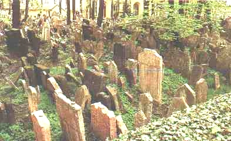

Listen to 'Inscription' in English

STELE
Un tourbillon m'a pris. Eclats, tambours battants,
Pavillons claquetant, délires de prophètes,
Sang giclant, quand soudain arraché à leur fêtes
Je chus dans ce repos qui ne connaît de temps.
Le cristal sur ma paix referma ses battants.
Le tumulte apaisé, je fus ciel et défaite.
Je voyais s'agiter des ailes sur mes faîtes,
Mais rien ne dérangeait mes lointains éclatants.
Un sommeil obstiné borne ma violence.
J'ignore si je suis le songe ou le soudard,
Où se tient ce conflit qui m'habite et balance
Et je n'aurai connu quel fut mon étendard
Quand je déserterai, jetant casque, écu, lance,
Ce combat de copeaux sur un lit de silence.
Michel Galiana (c) 1990
STELE
I was caught in a whirl of shouts and rolling drums,
Flags clattering in the wind, delirious foresights,
Blood spurting… Suddenly, torn away from their rites,
I fell into this rest which ignores times and tides.
On my recovered peace I fold a crystal door
The tumult ceased, I was sky, yet I was undone
I saw wings stirring high above my ridge’s crown
But nothing would trouble my dazzling distant shore.
An obstinate slumber confines my violence.
I don't know if I am a dream or a soldier,
Nor where is fought the fight causing my hesitance,
Nor shall I know what were my standard and banner
When I desert, casting away helmet, shield, lance,
This dull doctored fray on a bed of silence.
Transl. Christian Souchon (c) 01.01.2004-2026 (c) (r) All rights reserved
|
Commentaires Charles Chaim WAX, poète américain: "merveilleuse histoire de combat et de rédemption le rêve d'une paix durable pour soi-même et pour le monde un beau poème" Allyce Crenshaw, 9 december 2011: "Voilà un poème énigmatique, pour ne pas dire plus. A la lecture de chaque phrase, les mots hésitaient sur ma langue et s’emmêlaient à mes pensées pour ne faire qu’un seul tissu. Merci pour ce poème, source d’inspiration. J’espère qu’il y en aura d’autres." |
Comments: An American poet, Charles Chaim WAX: "a wonderful tale of struggle and redemption the dream of lasting peace for self and world a fine poem" Allyce Crenshaw, 9 december 2011: "This poem is intriguing to say the very least, as I read each sentence the words trembled off my tongue and become tangled and weaved in my thoughts. Thank you for sharing this inspiring piece. I look forward to reading more of you're work." |
|
Stèle — Épilogue du Songe du Verger Placement immédiatement après Le Songe du Verger, Stèle opère une rupture délibérée : un retour de l’aube métaphysique du verger au monde concret et discordant des bouleversements politiques. Là où Le Songe du Verger se déploie dans un registre visionnaire — lumière de l’aube, formes instables, le verger comme seuil d’éveil intérieur —, Stèle réintroduit brutalement le bruit, la foule, les banderoles et le sang. Le contraste est intentionnel : Michel passe du jardin onirique et sublime au moment historique qui s’y immisce. Le tourbillon de « cris et de tambours », le « claquement des drapeaux », le « sang qui gicle » et le battement d’ailes au-dessus de ma crête évoquent des événements dont Michel a été témoin direct : le putsch d’Alger en 1961 ou, plus vraisemblablement, mai 1968, lorsque des avions venus de Villacoublay ont survolé la ville et que les rues se sont remplies de manifestants. L’anarchisme de Michel le rendait sensible à l’étincelle initiale de la révolte, mais il reculait devant la confrontation organisée et le spectacle de la violence. Stèle saisit précisément cette ambivalence : le narrateur est saisi par le tumulte, puis se retire brusquement, fermant la « porte de cristal » sur la frénésie du monde. Le geste final du poème – la désertion, l’abandon du casque, du bouclier et de la lance – marque un refus des bannières collectives, un rejet des combats falsifiés ou « trafiqués », un retour au silence intérieur que le rêve du verger avait ouvert. Le « combat de copeaux sur un lit de silence » réduit le tumulte politique à des débris, un bruit sans substance, incapable de soutenir l’intensité visionnaire du poème précédent. Ainsi, Stèle fait office d’épilogue au Songe du Verger : une descente de l’aube métaphysique à la désillusion historique, un rappel que les bannières du monde extérieur sont illusoires et que le véritable jardin – comme le véritable conflit – se trouve ailleurs. |
Stèle — Épilogue du Songe du Verger Placed immediately after Le Songe du Verger, Stèle functions as a deliberate rupture —a return from the orchard’s metaphysical dawn to the concrete, discordant world of political upheaval. Where Le Songe du Verger unfolds in a visionary register —dawn light, unstable forms, the orchard as a threshold of inner awakening—Stèle abruptly reintroduces noise, crowds, banners, and blood. The contrast is intentional: Michel shifts from the sublime dream garden to the historical moment that intrudes upon it. The whirlwind of “shouts and rolling drums,” the “flags clattering,” the “blood spurting,” and the “wings stirring above my ridge’s crown”, all point to events Michel witnessed directly —either the 1961 Algiers putsch or, more plausibly, May 1968, when planes from Villacoublay flew overhead and the streets filled with demonstrations. Michel’s anarchism made him sympathetic to the initial spark of revolt, but he recoiled from organized confrontation and from the spectacle of violence. Stèle captures precisely this ambivalence: the speaker is seized by tumult, then abruptly withdraws, shutting the “crystal door” on the world’s frenzy. The poem’s final gesture—desertion, abandonment of helmet, shield, and lance —marks a refusal of collective banners, a rejection of adulterated or “doctored” frays, a return to the inner silence that the orchard’s dream had opened. The “combat of shavings on a bed of silence” reduces political tumult to debris, noise without substance, incapable of sustaining the visionary intensity of the preceding poem. Thus Stèle serves as the epilogue to Le Songe du Verger: a descent from metaphysical dawn into historical disillusionment, a reminder that the outer world’s banners are false, and that the true garden—like, the true conflict—lies elsewhere. |
Listen to 'Inscription' in English